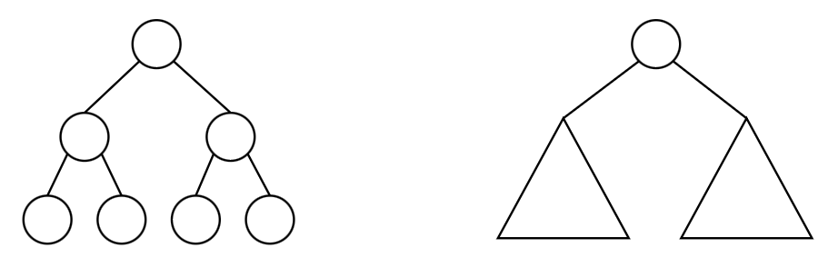

Disclaimer
Questo md-book è una sintetica raccolta dei miei appunti personali sul corso Functional and Concurrent Programming Principles dell'Università degli studi di Catania durante l'anno accademico 2023/24.
L'intento è quello di costruire qualcosa di più esplicativo di un indice ma in nessun modo sostituibile al materiale del corso.
Ogni testo di riferimento sarà citato in bibliografia
Per ulteriori articoli visita Il mio Sito Web
Definizione ricorsiva sui naturali
Una nota non da poco che voglio appuntare come primo capitolo riguarda una semplice quanto efficace accortezza nel modo di pensare una definizione di funzione.
Volendo definire funzioni sui numeri naturali, è di nostro interesse vedere intanto come questo insieme più semplice sia definito.
Reminder sui numeri naturali
Intuitivamente possiamo vedere i naturali disposti su una semiretta secondo una relazione di ordinamento, da 0 a \(+\infty\).
Definendoli tutti in funzione del primo elemento iterando una procedura di generazione (la funzione successore) si ottiene una sequenza del tipo:
\[0, S(0), S(S(0)), \dots\]
Possiamo definirli per ricorsione nel seguente modo:
L'insieme dei numeri naturali (indicato con \(\mathbb{N}\)) si definisce come il più piccolo insieme tale che:
\(n \in \mathbb{N}\) se:
- \(n = 0\)
- \(n = S(n-1)\)
dove \(S\) rappresenta la funzione successore.
NB. "il più piccolo insieme tale che" è un sinonimo di "tutti e soli gli elementi tali che"
Definire funzioni su \(\mathbb{N}\)
Torniamo al topic di questo capitolo: dato che i naturali sono definiti in termini di elemento base e elemento generico, allora una funzione \(f\) sull'insieme dei naturali può essere elegantemente definita per ricorsione sull'elemento base di \(\mathbb{N}\) e sull'elemento generico di \(\mathbb{N}\).
Parlando di Haskell abbiamo delineato tre elementi principali per definire qualcosa per ricorsione:
- Denotare l'oggetto di base
- Denotare un costruttore
- Decomporre oggetti composti
Un selettore mi decompone un oggetto composto.
Per le liste ad esempio possiamo usare i selettori head e tail per decomporre l'oggetto lista in due:
- il primo elemento (head)
- la lista rimanente (tail)
Volendo definire la funzione len che presa una lista ne restituisca la sua lunghezza possiamo scrivere:
\[
len(l)=
\begin{cases}
0 & \text{se } |l| = 0 \\
1+len( tail(l)) & \text{altrimenti}
\end{cases}
\]
e rappresentarla in haskel come:
len l = if(null l) then 0 else 1 + (len (tail l))
dove null è una funzione che da valore di verità positivo se il suo argomento è una lista vuota.
Curryficazione
La curryficazione è una trasformazione da una funzione:
\[f:(A_1,\dots,A_n)\rightarrow B\]
a una funzione
\[f_C:A_1\rightarrow(A_2\rightarrow(\dots(A_n\rightarrow B)..))\]
in \(\lambda\)-calcolo ogni funzione è curryficata.
Questa è una delle prime cose che ci si sente dire quando si impara il \(\lambda\)-calcolo.
Vediamo intanto di capire praticamente cosa significa che una funzione sia curryficata.
Prendiamo in considerazione una funzione
\[sum:\mathbb{N}\times\mathbb{N} \rightarrow \mathbb{N}\]
che prende come argomento due naturali e ne restituisce la somma.
La sua versione curryficata sarà
\[sum_c:\mathbb{N} \rightarrow \mathbb{N} \rightarrow \mathbb{N}\]
che prende come argomento un intero \(a\) e restituisce una nuova funzione (detta applicazione parziale) che prende un intero e vi applica la somma di \(a\).
Ad esempio
\(sum(3,5)=8\) non essendo curryficata applica subito la somma fra i due argomenti;Invece \(sum_c(3,5)=8\) in un primo momento restituisce una applicazione parziale, rappresentabile come una funzione \(f(x)=3+x\) che prende un intero e vi somma sempre 3; in un secondo momento questa nuova funzione si applica al 5 restituendo 8.
La stessa notazione usata sopra, infatti, è inesatta:
dovremmo scrivere \(sum_c(3)(5)=8\)
Lati negativi della curryficazione
Nessuno.
Per quanto sembri controintuitivo all'inizio, la curryficazione aggiunge solo espressività in più rispetto alla forma non curryficata di una funzione.
Per questo motivo in \(\lambda\)-calcolo scriviamo soltanto funzioni con un solo argomento.
N.B.
Quando si vedono \(\lambda\)-termini come \(\lambda x.y.zxy\)
è solo una abbreviazione di \(\lambda x. \lambda y. zxy\)
E dato che Haskel implementa il modello computazionale del \(\lambda\)-calcolo, la funzione somma viene applicata come segue
sum 3 5
senza l'ausilio di parentesi, dal momento in cui in haskel ogni funzione è currificata
Nota sulle funzioni di ordine superiore
Quando parliamo di funzioni che prendono come argomento o restituiscono altre funzioni, vi si fa riferimento col termine funzioni di ordine superiore.
Ad esempio la funzione atzero che prende una funzione come argomento e restituisce l'applicazione di quella funzione a zero.
atzero f = f 0
Oppure la funzione compose che prende due funzioni (sempre in versione curryficata) e ne restituisce la composizione
compose f g = f g
Bibliografia
- Computazioni, Programmazione funzionale e Preludio al λ-calcolo by Franco Barbanera
- Short Introduction to Functional Programming and Lambda-calculus by Franco Barbanera
Rappresentazione di Oggetti
“separare scrupolosamente, crudelmente, l’elemento grafico dall’elemento plastico: se ad essi accade di trovarsi sovrapposti all’interno del quadro, come una didascalia e la sua immagine, è a condizione che l’enunciato contesti l’identità esplicita della figura e il nome che si è pronti a darle”. - René Magritte (1898-1967)
Un concetto chiave quando si parla di formalismi matematici e linguaggi di programmazione è la differenziazione tra l'oggetto che si vuole rappresentare e la rappresentazione dello stesso.
Cosa vedete in questo quadro? Se avete risposto una pipa avete sbagliato, questa è la rappresentazione di una pipa.
Può sembrare controintuitivo ma nel momento in cui vi chiedo di fumare quella pipa vi rendete conto che a meno che non vogliate arrotolare il dipinto e infiammarne un'estremità non sia possibile.
Anche volendo, la vera pipa che il quadro raffigura non può essere arrotolata, quindi la rappresentazione ha delle proprietà aliene all'ogetto rappresentato.
Allo stesso modo quando in un linguaggio come C rappresentiamo un albero binario di ricerca dobbiamo tenere a mente che quella cosa non è davvero un albero perchè maneggiando i puntatori potremmo compiere operazioni che un BST non ammetterebbe.
Quindi onde evitare di arrotolare un albero binario nel malaccorto tentativo di rappresentarlo, gli informatici hanno creato dei formalismi matematici che cercano di ridurre al minimo queste eventualità.
Oggetti in haskell
La potenza di un linguaggio funzionale come haskell è quella di rappresentare \(\lambda\)-termini e funzioni matematiche, il che, a fronte di un paradigma meno intuitivo a chi è abituato alle macchine di turing, riduce notevolmente il rischio di errori e aumenta l'espressività del codice.
Reminder su Pattern matching
In haskell possiamo definire la funzione che somma tutti gli elementi di una lista comesomma l = if(null l) then 0 else (head l) + (somma (tail l))oppure possiamo rappresentarla tramite pattern matching:
somma [] = 0 somma [n:ns] = n + somma nsIn questo caso stiamo sfruttando il pattern
n:nsche ci aiuta a generalizzare una lista in termini di primo elemento \(n\) contatenata (\(:\)) al resto della lista \(ns\).Separiamo quindi il caso base in cui la lista corrisponde a una lista vuota [] dal caso generico in cui la lista corrisponde al pattern
[n:ns].
vedremo una definizione formale di pattern matching nel capitolo sintetico sul \(\lambda\)-calcolo.
Immaginiamo un albero binario etichettato. Può essere definito formalmente per ricorsione come un nodo con un'etichetta collegato a due alberi binari etichettati.
 Allo stesso modo possiamo rappresentarlo in haskell e utilizzarlo tramite pattern matching nel seguente mododata BTint = EmptyT | MkT Int BTint BTint
Con MkT chiamiamo quello che sarà il costruttore del nostro albero.
Mentre con Empty rappresentiamo l'albero vuoto.
Vediamo un esempio di funzione che prende come argomento questo albero e restituisce la somma delle etichette.
sumT EmptyT = 0
sumT (MkT n bt1 bt2) = n + (sumT bt1) + (sumT bt2)
Bibliografia
- Notes on Data Types in Haskell by Franco Barbanera
Ripasso sul lambda calcolo
Modelli computazionali
Un modello computazionale è un formalismo matematico costruito appositamente per studiare le proprietà di una computazione indipendentemente dal linguaggio di programmazione.
Possiamo dire infatti che ogni buon linguaggio di programmazione implementa uno specifico modello computazionale.
Questo da la garanzia che alcune proprietà siano rispettate e semplifica eventuali studi e dimostrazioni di affermazioni su programmi scritti tramite lo stesso.
I linguaggi di programmazione funzionale si basano sul \(\lambda\)-calcolo.
Lambda termine
Tre principi fondamentali sono sufficienti per derivare da essi qualunque definizione di funzione.
- Variabile
- Applicazione
- Astrazione funzionale
Si noti che ogni \(\lambda\)-termine rappresenta la definizione di una funzione, non la funzione stessa.
Un \(\lambda\)-termine si definisce formalmente come:
\(\Lambda ::= X | (\Lambda \Lambda) | \lambda X.\Lambda \)
dove \(\Lambda\) rappesenta il genrico \(\lambda\)-termine e \(X\) rappresenta qualunque nome di variabile (\(x,y,z,\dots\))
Scope
In un'astrazione funzionale \(\lambda x.P\) il termine \(P\) è detto scope dell'astrazione.
Possiamo dire che il termine \(P\) rappresenta il corpo di una funzione e \(x\) il suo argomento.
Variabile legata (BV)
\( BV(x) = \emptyset \\ BV(PQ) = BV(P) \cup BV(Q)\\ BV(\lambda x.P) = x \cup BV(P) \)
Variabile libera (FV)
\( FV(x) = x \\ BV(PQ) = FV(P) \cup FV(Q)\\ FV(\lambda x.P) = FV(P) \setminus \{x\} \)
Sostituzione
Si definisce sostituzione, denotata come \(M[L/x]\), il tremine M in cui ogni occorrenza della variabile libera \(x\) viene sostituita col termine \(L\).
Attenzione
Si può fare solo a patto che valga la condizione che: \[BV(M) \cap FV(L) = \emptyset\] vediamo perchè:
rappresentiamo la funzione costante come \(\lambda x.z\).
Se applichiamo la sostituzione \(\lambda x.z[y/z]\) ottenendo \(\lambda x.y\) il senso della funzione rimane invariato.
Ma se scriviamo \(\lambda x.z[x/z]\) otteniamo \(\lambda x.x\) che invece rappresenta la funzione identità.
Sostanzialmente \(x\) prima di essere sostituita su \(z\) è libera ma poi diventa legata. Questo evento si evita rispettando la condizione di cui sopra.
Definizione formale di sostituzione
Come spiegato anche sul primo capitolo. Se i \(\lambda\)-termini sono refiniti in funzione di tre concetti, allora anche la sostituzione sui \(\lambda\)-termini la definiremo sugli stessi 3 concetti. Rimando al testo di riferimento per veferla in dettaglio.
\(\beta\)-riduzione
Un termine \(P\) \(\beta\)-riduce in uno step in un termine \(Q\) se \(Q\) può essere ottenuto da \(P\) sostituendo un sottotermine di \(P\) della forma \((\lambda x.M)N\) tramite \(M[N/x]\).
Nota Diremo che ogni termine della forma \((\lambda x.M)N\) si chiama \(\beta\)-redex (o redesso) mentre diremo che il relativo termine della forma \(M[N/x]\) è il suo contractum.
E si scrive:
\[
(\lambda.M)N \rightarrow_{\beta} M[N/x]
\]
assumiamo da ora in poi per semplicità sintattica che ogni riduzione indicata con \(\rightarrow\) sia una \(\beta\)-riduzione
Esempio
Supponendo di avere la moltiplicazione (indicata con \(*\) ) \((\lambda x.x * x)2 \rightarrow 2 * 2\)
Possiamo anche usare la sintassi: \[ P \twoheadrightarrow Q \] per dire \(P \rightarrow P_1 \rightarrow P_2 \rightarrow \dots \rightarrow P_k\) con \(M_k \equiv Q\)
Normalizzazione
- Un \(\lambda\)-termine si dice in forma normale se non contiene nessun \(\beta\)-redex.
- Un termine \(N\) si dice normalizzabile se esiste un termine \(Q\) in forma normale tale che
\[N \twoheadrightarrow Q\] - Un termine si dice fortemente normalizzabile se ogni possibile sequenza di \(\beta\)-riduzioni porta a una forma normale
Il termine \(\Omega\)
Esiste un termine molto particolare chiamato \(\Omega\) che ha questa forma
\[(\lambda x.xx)(\lambda y.yy)\]
tale che \(\Omega \rightarrow \Omega\) all'infinito. Vediamo una implicazione interessante nel capitolo sulle strategie di riduzione
Bibliografia
- Short Introduction to Functional Programming and Lambda-calculus by Franco Barbanera
Strategie di riduzione
Possiamo vedere una strategia di riduzione come una regola che disciplina la scelta di quale \(\beta\)-redex ridurre prima e quale dopo. Ogni linguaggio di programmazione funzionale può essere caratterizzato da una strategia di riduzione differente. Possiamo individuare due macro-famiglie: call-by-value e call-by-name
Call-by-value
Questa strategia prevede che un \(\beta\)-redex possa essere ridotto solo se il suo argomento è un valore.
Non ci curiamo adesso di definire cosa sia un valore proprio per mantenere un certo grado di genericità.
Ponendo ad esempio per valore un qualunque termine in forma normale, possiamo dire che nel seguente termine:
\[
((\lambda x.x)((\underline{\lambda y.y)z})) (\lambda x.xx)(\lambda z.z)
\]
ridurre con una strategia call-by-value significa scegliere per primo il termine sottolineato, perchè è l'unico in forma normale.
N.B. Sottolineo ancora che la definizione di valore può essere diversa in base al linguaggio.
Scheme (un famoso linguaggio funzionale), ad esempio, considera anche una funzione come un valore.
Call-by-name
Questa famiglia racchiude tutte le altre strategie, ovvero quelle che riducono un \(\beta\)-redex senza controllare se il suo argomento sia un valore o no.
Due note strategie call-by-name sono:
- lazy strategy (chiamate anche call-by-need): che riducono un redex solo se strettamente necessario per valutare il valore finale;
- leftmost-outermost (chiamate anche normal order): che come dice il nome provano a ridurre per primo il \(\beta\)-redex più esterno e più a sinistra.
Esempio di normal order strategy se consideriamo il termine: \[(\underline{(\lambda x.x)\lambda y.yy})((\lambda x.xx)z)\] una strategia normal order ridurrà per primo il termine sottolineato proprio perchè è tra i più esterni quello più a sinistra.
Confronto tra strategie
Avevo detto che il nostro termine \(\Omega\) sarebbe servito.
Se un termine ha una forma normale ma è anche possibile ridurlo un numero infinito di volte, significa che possiede un sottotermine che non ha una forma normale. Ad esempio il termine
\[(\lambda x.z)\Omega\]
Notiamo che, dato che \(\Omega\) riduce sempre in se stesso, solo una strategia che lo tratti "per intero" senza ridurlo potrà "eliminarlo" ottenendo:
\[(\lambda x.z)\Omega \rightarrow z\]
Fare questo significa usare una strategia call-by-name.
Se invece tentassimo di ridurre prima il termine \(\Omega\) per poi (immaginandolo possibile) applicarvi la funzione a sinistra, otterremmo una sequenza infinita del tipo:
\[(\lambda x.z)\Omega \rightarrow (\lambda x.z)\Omega \rightarrow \dots\]
Fare questo significa usare un strategia call-by-value.
In conclusione possiamo dire che seppur una call-by-name possa metterci un numero di riduzioni maggiore di una call-by-value a raggiungere una forma normale (ammesso che esista), essa ci garantisce sempre che venga raggiunta.
Mentre invece, una sequenza di riduzioni call-by-value potrebbe raggiungere una forma normale più rapidamente come potrebbe divergere all'infinito senza mai trovarla.
Teorema di Standardizzazione
Se un termine ha una forma normale essa sarà sempre raggiunta con una strategia di riduzione normal order.
Rappresentare funzioni ricorsive
Chi non ha mai avuto a che fare con questo modello computazionale penserà che per un linguaggio di programmazione sia necessario poter dare nomi alle funzioni per rappresentare una funzione ricorsiva.
Consideriamo ad esempio la funzione fattoriale
\[
fact(n)=
\begin{cases}
1 & \text{se } n = 0 \\
fact(n-1) & \text{se } n > 0
\end{cases}
\]
In Haskell viene rappresentata così:
fact 0 = 1
fact n = n * fact n-1
La definizione è possibile grazie al fatto che alla funzione viene attribuito un nome.
Il lambda calcolo non dispone di nessuna primitiva che ci consenta di fare questo.
Nonostante ciò riusciamo a rappresentare queste funzioni attraverso il concetto di punto fisso.
Punto fisso
Il punto fisso di una generica funzione \(F: D \rightarrow D\) è quell'elemento \(d \in D\) tale che
\[F(d)=d\] In aritmetica non tutte le funzioni dispongono di punti fissi.
Ad esempio la funzione \(f(x)=x^2\) ha due punti fissi: 0 e 1. Invece la funzione \(f(x)=x+1\) non ne ha.
Trasportando la nozione di punto fisso nel lambda calcolo possiamo dire che se \(F\) e \(N\) sono lambda termini, si dice che se \(N\) è un punto fisso di \(F\) se \(F N =_\beta N\)
Teorema
Nel lambda calcolo non tipato ogni termine F ha un punto fisso.
Dimostrazione
Sia \(Y\) un particolare lambda termine così definito
\[\lambda f.(\lambda x. f(xx))(\lambda x. f(xx))\]
supponiamo che \(F\) sia un generico lambda termine e chiamiamo \(N = YF\).
Dimostriamo che \(N\) è un puntofisso di F nel seguente modo:
\[
\begin{align}
N &= YF\\
&= \lambda f.(\lambda x. f(xx))(\lambda x. f(xx))F\\
&= (\lambda x. F(xx))(\lambda x. F(xx))\\
&\twoheadrightarrow F((\lambda x. F(xx))(\lambda x. F(xx)))\\
&= F(YF)\\
&= F(N)
\end{align}
\]\[\qquad \qquad \qquad \qquad \qquad \qquad \blacksquare\]
Il termine \(Y\) viene chiamato operatore di punto fisso e permette di trovare il punto fisso di una termine semplicemente applicandolo allo stesso.
Esistono molteplici operatori di punto fisso: di Kleene, di Tarsky, di Turing, di Church (quello utilizzato sopra), ecc. Ognuno è rappresentato in maniera diversa e risponde ad esigenze diverse funziona meglio con strategie di valutazione diverse.
Consiglio la lettura della dimostrazione(pag.21)del medesimo teorema utilizzando l'operatore di punto fisso di Turing.
Vediamo come applicare questo concetto alla definizione di fattoriale attraverso i seguenti passaggi:
\[
\begin{align}
\textbf{fact }\text{n} &= \text{if_then_else(iszero n)(1) (mult (n }\textbf{fact}\text{(pred n)))}\\
\textbf{fact} &= \lambda n. \text{if_then_else(iszero n)(1) (mult (n fact(pred n)))}\\
\textbf{fact} &= \lambda f. \lambda n. \text{if_then_else(iszero n)(1) (mult (n f(pred n)))}\textbf{fact}\\
\end{align}
\]
Se adesso chiamiamo \(F\) il termine:
\[\lambda f. \lambda n. \text{if_then_else(iszero n)(1) (mult (n f(pred n)))}\]
otteniamo:
\[\textbf{fact} = F \textbf{ fact}\]
Il problema si riduce una equazione di punto fisso: trovare fact, in quanto punto fisso del termine F.
Ormai abbiamo capito che questo genere di problemi in lambda calcolo possono essere agilmente risolti ponendo:
\[
\begin{align}
\textbf{fact} &= \textbf{Y } F\\
&=\textbf{Y }\lambda f. \lambda n. \text{if_then_else(iszero n)(1) (mult (n f(pred n)))}
\end{align}
\]
Adesso il lambda termine al secondo membro è un termine chiuso che rappresenta perfettamente la funzione fattoriale.
Esempio valutazione lambda termine con punto fisso
Fattoriale di 3
Questo esempio mostra in maniera più esplicita possibile il lavoro che svolge l'operatore di punto fisso su una valutazione del lambda-termine che rappresenta il fattoriale di 3Y(\(\lambda\)f.(\(\lambda\)n.if(= n 0)1(mult n f(minus n 1)))) 3
applico l'operatore di punto fisso
\(\lambda\)f.(\(\lambda\)n.if(= n 0)1(mult n f(minus n 1))) Y(\(\lambda\)f.(\(\lambda\)n.if(= n 0)1(mult n f(minus n 1)))) 3adesso applico la nuova funzione alla prima sostituendo \(\lambda\)f con Y(F)
(\(\lambda\)n.if(= n 0)1(mult n Y(\(\lambda\)f.(\(\lambda\)n.if(= n 0)1(mult n f(minus n 1)))) (minus n 1))) 3applico la costante 3 sostituendola al \(\lambda\)n
if(= 3 0)1(mult 3 Y(\(\lambda\)f.(\(\lambda\)n.if(= n 0)1(mult n f(minus n 1)))) (minus 3 1))risolvo le valutazioni della funzione più esterna (quindi l'if a sinistra e il minus più a destra)
mult 3 Y(\(\lambda\)f.(\(\lambda\)n.if(= n 0)1(mult n f(minus n 1)))) 2ora reitero i passaggi precedenti
mult 3 if(= 2 0)1(mult 2 Y(\(\lambda\)f.(\(\lambda\)n.if(= n 0)1(mult n f(minus n 1)))) (minus 2 1))mult 3 mult 2 Y(\(\lambda\)f.(\(\lambda\)n.if(= n 0)1(mult n f(minus n 1)))) 1
mult 3 mult 2 if(= 2 0)1(mult 2 Y(\(\lambda\)f.(\(\lambda\)n.if(= n 0)1(mult n f(minus n 1)))) (minus 1 1))
mult 3 mult 2 mult 1 Y(\(\lambda\)f.(\(\lambda\)n.if(= n 0)1(mult n f(minus n 1)))) 0
mult 3 mult 2 mult 1 1
6
Bibliografia
- Short Introduction to Functional Programming and Lambda-calculus by Franco Barbanera
- Lecture Notes on the Lambda Calculus by Peter Selinger